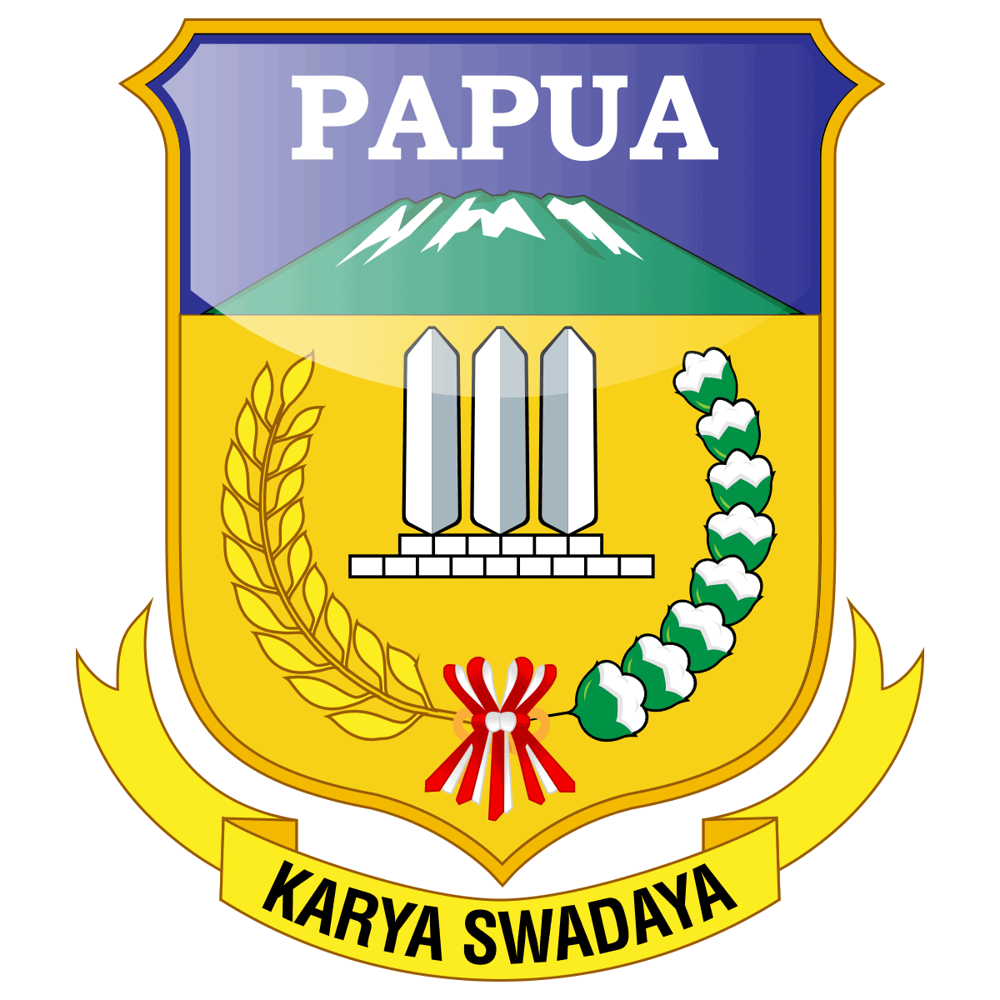
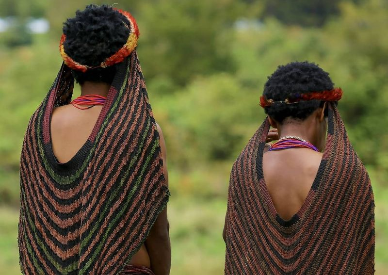
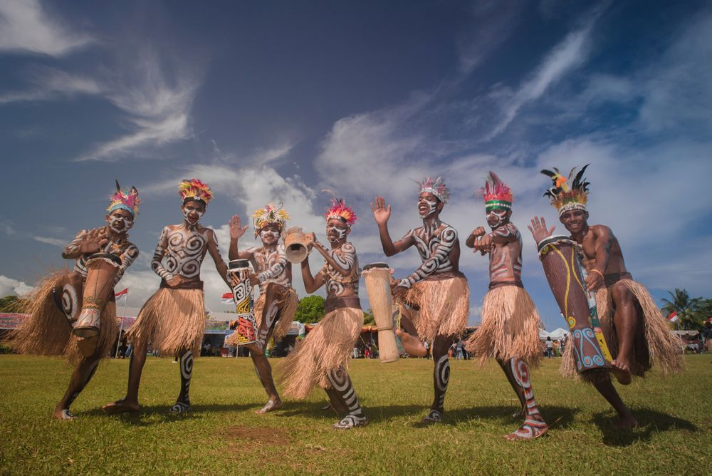
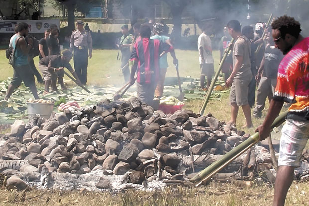

Menenun Warisan, Menginspirasi Masa Depan Papua.
Mari menelusuri jejak warisan leluhur, dari magisnya ukiran suku Asmat hingga kehangatan rumah Honai. Mahakarya budaya Papua kini hadir di hadapan Anda.
Mari Belajar Bersama
Jadilah bagian dari penjaga budaya. Papua Bisa
Etalase Mahakarya Timur
Papua bukan hanya tentang alam yang indah, melainkan juga kekayaan budaya dan tradisi yang diturunkan dari generasi ke generasi.
Seni Ukir Asmat
Mahakarya Kayu SakralRumah Honai
Arsitektur Penuh FilosofiTas Noken
Warisan Dunia UNESCOTari Tifa
Irama Jantung Papua
Mengenal Lebih Dekat Budaya Noken
Noken bukan sekadar tas jinjing biasa, melainkan simbol kemandirian dan kehidupan bagi masyarakat Pegunungan Tengah Papua. Rajutan serat kayu ini diwariskan secara turun-temurun oleh para ibu kepada anak perempuannya.

Kesenian Pergaulan
Pesona Tari Sajojo
Tarian Sajojo adalah ekspresi kegembiraan dan semangat kebersamaan masyarakat Papua. Iringan musik Tifa yang menghentak membuat siapa saja yang mendengar pasti ingin ikut menari. Gerakannya yang dinamis merepresentasikan jiwa muda yang terus berkobar.

Tradisi Syukuran
Ritual Bakar Batu
Tradisi Bakar Batu adalah salah satu ritual terpenting di Papua. Ini adalah prosesi memasak bersama menggunakan batu yang dibakar hingga membara, melambangkan rasa syukur, perdamaian, dan solidaritas persaudaraan.
Eksotisme Alam
Surga Tersembunyi Raja Ampat
Raja Ampat adalah mahkota keindahan alam Papua yang telah diakui oleh dunia internasional sebagai salah satu spot menyelam terbaik. Gugusan pulau karangnya yang menawan menyimpan keanekaragaman hayati laut terkaya di planet ini.

Tetua Adat Suku Asmat.
Menjaga tradisi ukiran kayu leluhur.